Итак, день 1. Стартовала экспедиция в лице меня, жены Наташи и двух одноимённых нам детей на автомобиле Nissan Murano в субботу, 14 июля.
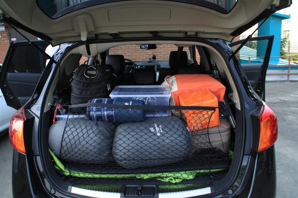
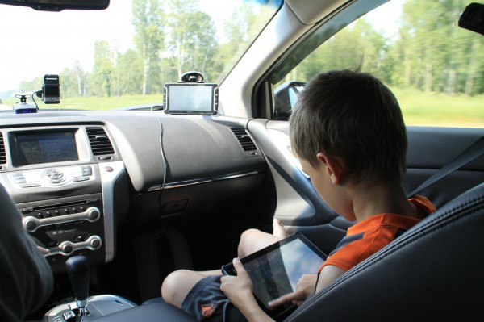
Выехали около 10 часов утра. Решили ехать по трассе через Болотное, по которой я не ездил уже лет 10. Одно время среди меня спросом пользовалась трасса через Промышленное, так как участок М53 не славился сносным дорожным покрытием. Сейчас дорога мимо Болотного выглядит лучше. К тому же перед Мочищем дорога выходит на сданный в эксплуатацию в прошлом году, так называемый Северный обход, который позволяет не заезжать в Новосибирск вовсе. Длина Северного обхода, кажется, 76 километров.
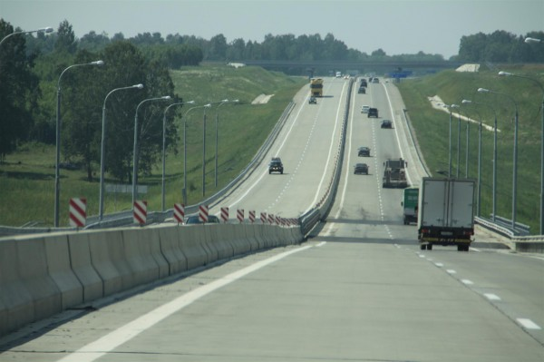
С заправками всё оказалось проще, чем казалось. Заправляемся пока только на «Газпромнефти» их, в общем, с лихвой хватает, чтобы не тянуть на полупустом баке.
С самого начала, начитавшись форумов и отзывов решили останавливаться обедать в кафе у которых «много дальнобойщиков». Типа дальнобойщики постоянно обедают в одном и том же месте, и чо попало есть не будут. Первый раз перекусили в придорожной кафешке «Харчевня». Несмотря на наличие рядом дальнобойщиков и часовни во дворе кормят плохо.
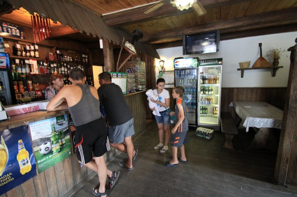
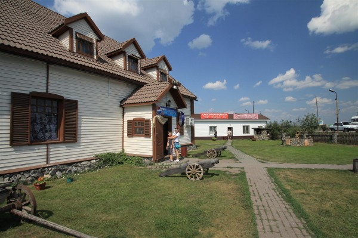
В следующей кафешке встретили водителей кораблей. −Это не корабли , а катера, везём из Питера во Владивосток. Осадка 90 см.».
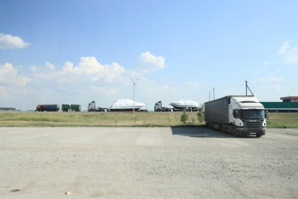
Изначально в планах было доехать в первый день до Омска, но потом решили заехать на знаменитое своей минеральной водой озеро Карачи.
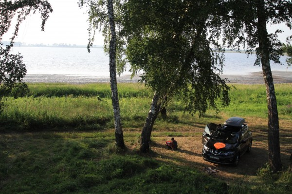
От озера плохо пахло, людей было немного. Люди мазались грязью. Вода, по сообщениям очевидцев, очень тёплая. Визуально, очень солёная. В общем-то где-то на Карачах произошёл переломный момент.
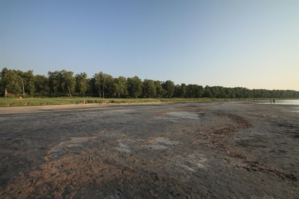
Мы решили не доставать палатки, а ехать дальше. Позже рядом с дорогой встретился город с вкусным названием — Калачинск
Калачинск стоит на реке Омь, и мы, по неопытности хотели разбить, чтобы переночевать, лагерь ещё там. При въезде в Калачинск туристов приветливо встречает свалка. Прям при въезде. Большая и дурнопахнущая. В самом Калачинске, несмотря на историю, всё как обычно. Плохие дороги, пьяные граждане, почему-то АЛПИ!. Омь встретила табличками «Купаться запрещено« и заболоченными берегами. В общем Калачинск был ошибкой, мы решили ехать дальше.
Время было позднее, встретили мотель, которых, вообще-то, хотели избегать, но сегодня вроде как заслужили, да и дочка подустала за эти ~850 километров.
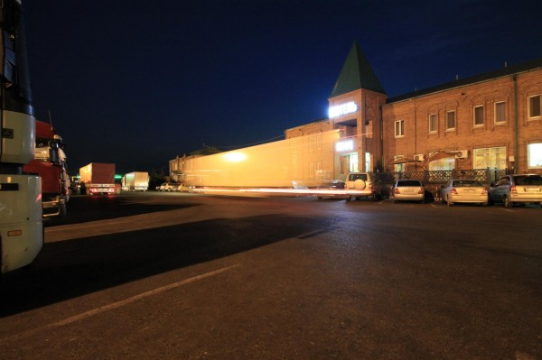
Мотель нас встретил тремя кроватями шампунем «Шампунь», ЖК-телевизором и душем. Стоимость номера — 2100. Мы забрали предпоследний номер. За нами сразу забрали последний. Пока Наташка укладывала спать другую Наташку, мы с Максимом пошли гулять вокруг и разговаривать с дальнобойщиками. Погуляли. Сфотографировались в кабине тягача.
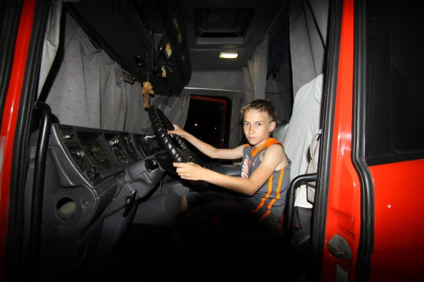
Номер на утро выглядел так. В дальнейшем все фотографии номеров будут по состоянию именно на утро, иногда на них будут люди, часто будет бардак. Нажми кнопку «Поделиться с друзьями» внизу страницы, если любишь бардак.
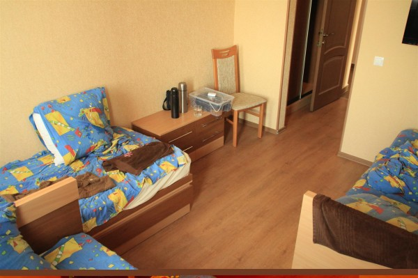
Выводы: на Карачах делать нечего, в Калачинск заезжать незачем, приличные мотели на трассе встречаются. Мотель «Омич», Омская область, г. Калачинск, федеральная трасса М51 Байкал, участок Новосибирск-Омск, телефон: +73815526852. Рекомендуем.